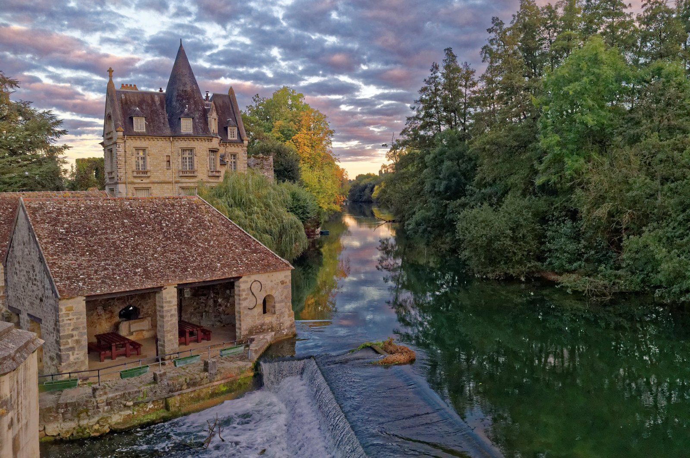

1. The Subcutaneous Corium: Biological Singularities of the Equine Posterior
To comprehend why shell cordovan stands as the undisputed pinnacle of luxury bagmaking, one must discard standard bovine leather preconceptions. Bovine hides, goat skins, and calfskins are composed of epidermis, papillary grain layer, and reticular corium. In all conventional hides, the outer grain layer provides cosmetic texture while the looser underlying reticular fiber bundles permit structural flexion. However, under cyclic compression—such as the repeated folding of an evening envelope clutch or the flex of a flap minaudière—conventional bovine grain delaminates microscopically from its looser base stratum, generating the familiar network of cross-hatched, sharp micro-creases.
Equine shell cordovan, known in historical European guild records as cuir de Cordoue, is fundamentally not skin or hide grain in the orthodox biological sense. It is a dense, fibrous subcutaneous membrane located specifically beneath the skin over the gluteal musculature of the equine hindquarters. This oval-shaped plate—measuring merely two to three square feet per animal—is an anatomically unique tissue known as the flat corium. When the outer epidermis and upper hair grain are meticulously shaved away with rotating curved skiving blades, master tanners reveal this ultra-dense interior layer of pure, tightly compacted collagen filaments.
Because the shell possesses zero grain layer, there is no differential shear stress between an outer skin layer and an inner fibrous sponge. The entire cross-section of genuine shell cordovan consists of homogeneous, parallel-aligned, crystalline collagen fibrils oriented at near-horizontal angles. Under high-magnification scanning electron microscopy, bovine leather displays a random, porous basket-weave orientation, whereas shell cordovan reveals an impenetrable, unidirectional alignment that resists atmospheric moisture infiltration and eliminates structural delamination.
2. Histological Fiber Packing: Comparative Porosity and Tensile Modulus
The mechanical integrity of any luxury evening clutch is governed by the tensile modulus and internal porosity of its substrate. An evening clutch is subjected to unique mechanical vectors: unlike a garment that drapes loosely or footwear that flexes along an arch, a clutch is held under continuous hand contact where body temperature, perspiration salts, and localized torsional pressure act upon rigid perimeter folds. Conventional calfskin clutches rely heavily on synthetic cardboard stiffeners (salpa or texon boards) glued between thin split leathers, resulting in brittle aging and bubbling over consecutive seasons.
In sharp contrast, shell cordovan possesses an inherent self-supporting tensile modulus of 185 to 240 MPa. The natural interstitial void fraction within genuine equine shell is less than 8.2%, compared to 28.5% to 42.0% in full-grain vegetable-tanned French calfskin. When vegetable tannins derived from oak bark and chestnut timber penetrate this microscopic matrix across six months of cold-botanical pit soaking, the polyphenolic rings bond permanently with the amine groups of the collagen chains, creating an irreversible organic cross-linkage that retains structural memory indefinitely.
3. Histological & Mechanical Benchmark Matrix: Shell Cordovan vs Conventional Luxury Leathers
The quantitative physical parameters below illustrate why genuine equine shell cordovan delivers unmatched longevity and dimensional stability when calibrated for bespoke evening clutches and minaudières:
| Material Classification | Collagen Fiber Orientation | Internal Porosity (%) | Tensile Strength (MPa) | Flexural Crease Behavior | Expected Service Life |
|---|---|---|---|---|---|
| Equine Shell Cordovan | Unidirectional Parallel Corium | 6.8% - 8.2% | 210 - 245 MPa | Zero Creasing (Harmonic Rolls) | 80+ Years / Multi-Generational |
| French Full-Grain Box Calf | Random Basket-Weave Papillary | 26.4% - 32.0% | 95 - 130 MPa | Micro-Wrinkling & Surface Crazing | 15 - 25 Years with Care |
| Italian Vegetable Shoulder | Medium-Density Interlocking | 31.0% - 38.5% | 110 - 145 MPa | Moderate Grain Creasing | 20 - 30 Years with Care |
| Embossed Saffiano Hide | Split Base with Polyurethane Film | 38.0% - 46.0% | 65 - 85 MPa | Plastic Layer Fracturing | 5 - 8 Years (Non-Restorable) |

4. Fluid Dynamics of Harmonic Rolls: The Zero-Creasing Phenomenon
The most visually celebrated characteristic of a Cordovan Clutch Atelier evening bag is the complete absence of abrasive creases across the flap hinge. When a conventional leather envelope is folded back and forth thousands of times, the outer grain surface is subjected to intense tensile elongation while the inner flesh surface undergoes extreme compression. In grain leather, the inelastic outer epidermis eventually splits microscopically along weak points between grain pores, creating permanent, unsightly fissure lines that collect dust and grime.
With shell cordovan, the phenomenon of flexing is governed by fluid harmonic wave dynamics rather than localized shear fractures. Because the membrane is devoid of pores and consists entirely of dense, greased collagen bundles, the flexural energy distributes continuously across the broad radius of the hinge. Instead of creasing, the leather forms gentle, undulating ripples—reminiscent of the gentle swell of deep ocean waters.
This behavior is actively enhanced by the traditional hot-stuffing process. At the conclusion of the six-month vegetable tanning cycle, the wet shells are thoroughly impregnated with tallow, neat's-foot oil, and natural mutton grease on steam-heated tables. These natural lipids reside within the microscopic interstitial voids between collagen fibrils. When the clutch flap is bent, these micro-liquids dynamically shift along the pressure gradient, lubricating the adjacent fibrils and preventing any inter-fiber frictional abrasion.
5. Hot-Glass Agate Burnishing and the Physics of the Mirror Patina
Unlike commercial fashion leathers that receive sprayed acrylic topcoats, nitrocellulose varnishes, or synthetic polyurethane lacquers to simulate sheen, shell cordovan derives its luminous luster from pure mechanical pressure. In our Mercer Street atelier, the tanned and stuffed shells undergo manual glazing using solid, hand-polished cylindrical agate stones affixed to mechanical pendulum arms.
As the smooth agate stone traverses the shell under hundreds of pounds of vertical pressure, the friction generates localized thermal energy exceeding 58 degrees Celsius. This precise thermal threshold liquefies the embedded waxes and tallows at the immediate surface, allowing the microscopic collagen ends to be ironed completely flat. The resulting refractive index produces an optical phenomenon known as specular reflection: light reflects cleanly off the aligned organic crystal plane rather than scattering diffusely across textured grain.
Over decades of collector ownership, this agate-burnished surface absorbs ambient light, natural oils from the owner's touch, and subtle atmospheric oxidation. Rather than degrading or peeling like synthetic coatings, the shell develops an increasingly deep, liquid-like luster termed the "cordovan mirror." Colors such as deep color 8 burgundy, smoked mahogany, and antique oxblood intensify over thirty to fifty years of evening salon usage.